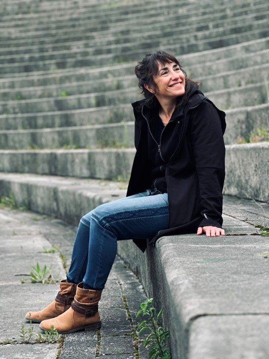
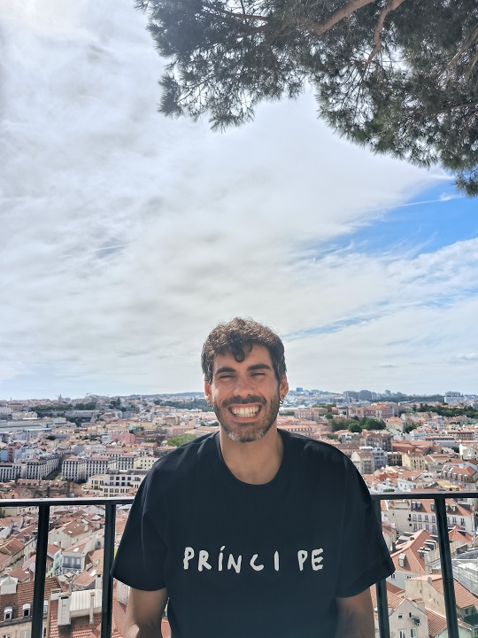

Bienvenida
Te damos la bienvenida a nuestra comunidad de tarot, un espacio de encuentro, aprendizaje e introspección. Exploramos el lenguaje simbólico de los arcanos y sus posibilidades para el autoconocimiento.
Realizamos diferentes actividades en torno al tarot. La principal es el curso introductorio El Camino de los 22 Arcanos, una propuesta de exploración personal a través de los arcanos mayores.
También nos encontramos online para compartir dinámicas introspectivas relacionadas con el Tarot, y organizamos talleres tratando aspectos más avanzados.

El Camino de los 22 Arcanos
Un camino para armonizar tu energía.
Este programa está diseñado para acompañarte en un proceso de reorganización y armonización interior, utilizando los Arcanos Mayores del Tarot como guía simbólica y herramienta evolutiva de autoconocimiento.
Cada arcano representa un arquetipo universal, un patrón simbólico presente en el inconsciente colectivo. Estos arquetipos reflejan dinámicas psicológicas fundamentales que compartimos todos los seres humanos.
Al ser comprendidas y trabajadas conscientemente, estas dinámicas nos permiten integrar aspectos de nosotras mismas, restablecer el equilibrio interno y desbloquear nuestro potencial.
Lejos del enfoque adivinatorio, el Tarot evolutivo propone una mirada introspectiva, transformadora y profundamente simbólica.
Durante el curso conectarás con estas fuerzas internas para alinear tu mente, tus emociones y tu energía vital, favoreciendo la claridad, la coherencia interna y el crecimiento personal.
¿Qué incluye el curso?
- Duración: del 3 de noviembre al 3 de diciembre de 2026.
- Modalidad: comunidad de WhatsApp y encuentros online vía Zoom.
- Contenido semanal: cada semana recibirás el material de los arcanos correspondientes, que incluirá una meditación, una lectura introductoria, ejercicios reflexivos y pequeñas dinámicas para cada uno de ellos.
- Tutorías en directo: dos encuentros grupales online vía Zoom en los que realizaremos una meditación conjunta y compartiremos nuestras experiencias. La asistencia es opcional, podrás seguir el curso aunque no puedas asistir a los encuentros.
- Acompañamiento constante: un espacio para compartir experiencias, resolver dudas y profundizar en cada etapa del proceso.
¿Qué necesitas?
- Tu propio Tarot: es aconsejable disponer de una baraja. Si no tienes ninguna, no pasa nada: recibirás las imágenes de cada arcano. Te recomendamos el Tarot de Marsella, aunque cualquiera es válido.
- Material:22 velas pequeñas y 22 tarjetitas de cartulina.
- Para los encuentros por Zoom: una tablet o un ordenador y conexión a internet.
Calendario
- Inicio: martes 3 de noviembre.
- Primer encuentro online (opcional): martes 10 de noviembre de 18:00 a 19:30 (CET).
- Segundo encuentro online (opcional): martes 1 de diciembre de 18:00 a 19:30 (CET).
- Fin: jueves 3 de diciembre.
Inversión
Curso completo: 100€ (50€ si repites la experiencia). Pago por transferencia bancaria. Manual: 20€ (envío incluido). Incluye todos los materiales del curso y contenido adicional en una edición cuidada. No es necesario para seguir el curso.
Algunas aclaraciones
- Cada semana recibirás la información y las reflexiones que deberás realizar sobre los arcanos correspondientes.
- Las reuniones online son complementarias y opcionales, para quienes puedan y quieran compartir sus dudas.
- Cualquier información adicional que se comparta durante las reuniones online se hará llegar también a través del grupo, para que nadie se pierda nada.
Nuestra visión del Tarot
El tarot tiene sus raíces en los juegos de cartas que se difundieron por Europa durante el siglo XV. Con el paso de los siglos, las imágenes de sus cartas fueron adquiriendo nuevos significados simbólicos y se incorporaron a distintas tradiciones de interpretación y reflexión. Hoy, el tarot puede abordarse desde múltiples perspectivas: histórica, artística, simbólica y espiritual.
Entendemos el tarot desde una perspectiva humanista y evolutiva. Para nosotrxs, sus imágenes y símbolos son una invitación a observar nuestra experiencia, reconocer patrones, explorar preguntas y abrir nuevas posibilidades de comprensión. No se trata de fijar un destino, sino de favorecer una relación más consciente con nuestra historia, nuestras decisiones y nuestro potencial de cambio.
A través del diálogo con los arcanos, buscamos acompañar procesos de reflexión y crecimiento personal, respetando la libertad, la singularidad y el recorrido de cada persona.
Si quieres saber más sobre nuestra comunidad, participar en las actividades de la escuela, o ponerte en contacto para cualquier otra cosa, puedes escribirnos a:
elcaminodelos22arcanos@gmail.com
Gloria González Urueña

¡Hola! Me llamo Gloria y esta es mi razón para estar aquí. Me licencié como psicóloga por la UCM hace unos 25 años y, al comprobar que la psicología académica no alcanzaba a responder algunas de mis preguntas sobre la dimensión más esencial de las personas, el sufrimiento humano, el sentido de la vida y la conciencia, amplié mi formación hacia la terapia transpersonal, la psicología evolutiva y espiritual. Mi profunda inquietud me ha llevado a recorrer ámbitos más académicos como la formación en EMDR, técnicas psicocorporales, meditación,…., a enfoques menos ortodoxos como la psicología esotérica En mi trayectoria personal también me he acompañado de diferentes maestros y mentores espirituales, con los que en la actualidad tengo la suerte de contar en mi camino. Acompaño procesos terapéuticos individuales y facilito grupos, talleres vivenciales, experiencias de meditación y retiros. Mi manera de trabajar integra las dimensiones psicológica, corporal y espiritual, atendiendo a las necesidades y al momento vital de cada persona. Reconozco la importancia de comprender la propia historia, acoger los miedos y sanar las heridas y patrones que condicionan la vida, pero sin perder de vista y poniendo gran énfasis en que la identidad no se agota en ese yo construido a partir de lo vivido. En el Tarot encontré una herramienta de profundo conocimiento del ser humano en su transitar por la vida. A través de su lenguaje simbólico ayuda a comprender lo que estamos viviendo, amplia nuestra mirada e invita a participar de forma más consciente en nuestra propia evolución. Y con el objetivo de ayudar a las personas a poder vivir con mayor libertad y conciencia, creé El camino de los 22 Arcanos. Lugar en el que ahora nos encontramos y al que te doy la bienvenida.
David García García

[Añadir aquí una presentación de la segunda persona: su recorrido, sus intereses, su visión del tarot y su contribución al proyecto.]